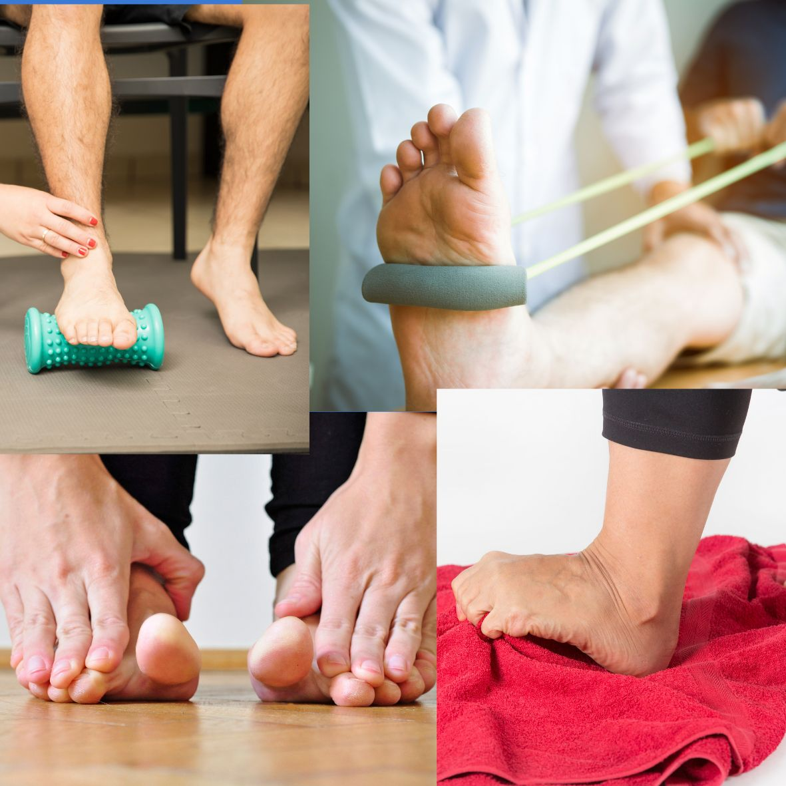

Exercices pour la fasciite plantaire : étirements, montées sur pointes et renforcement du pied
Si vos premiers pas au sortir du lit déclenchent une douleur vive sous le talon, vous n'êtes pas seul(e). La fasciite plantaire est l'une des causes les plus fréquentes de douleur au talon : elle touche les coureurs, les personnes qui restent debout toute la journée, et beaucoup de personnes qui ne sont ni l'un ni l'autre. La bonne nouvelle, c'est que la plupart des cas s'améliorent grâce à des exercices ciblés et réguliers et à une bonne gestion de la charge, généralement en quelques mois plutôt qu'en quelques jours. Voici un programme pratique à suivre à domicile.
Que se passe-t-il dans votre pied ?
Le fascia plantaire est une bande épaisse de tissu qui s'étend de l'os du talon à la base des orteils et soutient la voûte plantaire. Une surcharge répétée, due à une augmentation brutale de l'activité, à de longues heures debout, à des chaussures peu soutenantes, à des mollets raides ou à un excès de poids, peut irriter la zone où il s'attache au talon. Le signe classique est une douleur aux premiers pas du matin, ou après être resté assis un moment, qui s'atténue souvent à l'échauffement puis revient après de longues périodes passées debout.
Ce que l'on peut attendre de ces exercices
Soyons réalistes. Les études sur les exercices dans la fasciite plantaire sont de petite taille, et une revue récente a jugé faible le niveau de preuve en faveur des seuls étirements. Les exercices fonctionnent mieux comme une partie du traitement, avec des chaussures soutenantes, une réduction temporaire des activités qui aggravent la douleur et, parfois, des semelles ou une attelle de nuit. Un essai randomisé a montré que des montées sur pointes lentes et lourdes donnaient de meilleurs résultats à 3 mois que l'étirement du fascia plantaire, même si les deux groupes étaient comparables à 6 et 12 mois. En pratique, associer les deux est raisonnable. Donnez au programme au moins 6 à 12 semaines avant de le juger, et poursuivez même lorsque la douleur diminue.
1. Étirement du fascia plantaire
Cet étirement cible le fascia lui-même. Faites-le avant vos tout premiers pas du matin et avant de vous lever après une longue période assise.
- Asseyez-vous et croisez le pied douloureux sur le genou opposé.
- Saisissez vos orteils et ramenez-les vers le tibia jusqu'à sentir un étirement le long de la voûte plantaire. Avec votre autre pouce, vous pouvez sentir le fascia se tendre.
- Maintenez 10 secondes, puis relâchez.
- Fréquence : répétez 10 fois, jusqu'à 3 fois par jour.
2. Étirements du mollet
Des mollets raides augmentent la traction sur le fascia à chaque pas : cet étirement est donc important, même si la douleur se situe sous le talon.
- Tenez-vous face à un mur, la jambe douloureuse en arrière, le talon à plat sur le sol et les orteils dirigés vers l'avant.
- Gardez le genou arrière tendu et penchez-vous vers l'avant jusqu'à sentir un étirement dans la partie haute du mollet. Maintenez 30 secondes.
- Fléchissez ensuite légèrement le genou arrière, en gardant le talon au sol, pour atteindre le muscle profond du mollet juste au-dessus du talon. Maintenez encore 30 secondes.
- Fréquence : 2 à 3 répétitions sur chaque jambe, une à deux fois par jour.
3. Étirement avec une serviette ou un élastique
Une serviette, une sangle ou un élastique permet de maintenir un étirement régulier de la plante du pied et du mollet à la fois.
- Asseyez-vous, la jambe tendue devant vous.
- Passez la serviette ou l'élastique autour de l'avant-pied et tenez les deux extrémités.
- Tirez doucement pour ramener les orteils et le pied vers vous, le genou restant tendu, jusqu'à sentir un étirement le long de la plante du pied et de l'arrière de la jambe.
- Maintenez 30 secondes.
- Fréquence : 3 répétitions sur chaque pied, une à deux fois par jour.
4. Montées sur pointes lentes avec une serviette roulée
C'est le principal exercice de renforcement. Il sollicite progressivement le fascia plantaire et le mollet, ce qui aide le tissu à devenir plus résistant et à mieux tolérer les charges du quotidien.
- Roulez une serviette et placez-la sur le bord d'une marche. Tenez-vous debout, l'avant-pied sur la serviette, de sorte que les orteils soient relevés et que le talon dépasse dans le vide. Appuyez-vous à un mur ou à une rampe pour l'équilibre.
- Montez lentement sur l'avant-pied en prenant environ 3 secondes. Marquez une pause de 2 secondes en haut.
- Redescendez lentement le talon en prenant environ 3 secondes.
- Fréquence : 3 séries de 8 à 12 répétitions, un jour sur deux, et non tous les jours. Le tissu a besoin d'un jour de repos pour s'adapter.
- Progression : commencez sur les deux pieds si un seul pied est trop difficile. Quand 12 répétitions deviennent faciles, ajoutez du poids progressivement, par exemple un sac à dos lesté de quelques gros livres, et diminuez le nombre de répétitions par série.
- Soyez particulièrement prudent(e), et demandez d'abord l'avis de votre médecin ou de votre kinésithérapeute, en cas de mauvais équilibre, de pieds engourdis, de mauvaise circulation ou de diabète avec atteinte des nerfs.
5. Pied court et froissement de serviette
Ces deux exercices entraînent les petits muscles à l'intérieur du pied qui soutiennent la voûte plantaire. Les preuves en leur faveur sont limitées, mais ils sont doux et beaucoup de personnes les trouvent utiles en complément des exercices précédents.
Pied court
Assis ou debout, gardez les orteils à plat et rapprochez l'avant-pied du talon pour faire remonter la voûte plantaire, sans recroqueviller les orteils. Maintenez 5 secondes, puis relâchez. Répétez 10 fois.
Froissement de serviette
Asseyez-vous, le pied nu posé sur une petite serviette étalée sur un sol lisse. Avec les orteils, froissez la serviette vers vous, puis lissez-la de nouveau. Répétez 10 à 15 fois.
- Fréquence : une fois par jour.
6. Rouler la plante du pied
Faites rouler lentement la plante du pied sur un rouleau de massage, une balle ou une bouteille d'eau congelée pendant 2 à 3 minutes. Une bouteille froide apporte en plus une agréable sensation apaisante. Ce n'est pas un traitement curatif, mais beaucoup de personnes trouvent que cela soulage les douleurs, surtout après une longue journée passée debout.
Tout mettre ensemble : un programme quotidien simple
- Au réveil, avant de vous lever : étirement du fascia plantaire (1) et étirement avec serviette ou élastique (3).
- Dans la journée : étirements du mollet (2), et étirement du fascia plantaire à répéter après de longues périodes assises.
- Un jour sur deux : montées sur pointes lentes (4).
- Une fois par jour : pied court et froissement de serviette (5).
- Le soir : roulement de la plante du pied (6).
Commencez par les chiffres les plus bas et augmentez sur une quinzaine de jours. L'ensemble du programme prend environ 15 minutes réparties sur la journée.
Quelle douleur est acceptable ? La règle du « feu tricolore »
- 🟢 Feu vert : une gêne légère, jusqu'à environ 3 sur 10, qui disparaît le lendemain matin. Vous pouvez continuer !
- 🟡 Feu orange : une douleur de 4 à 5 sur 10, ou un talon nettement plus douloureux le lendemain matin. Faites moins de répétitions, réduisez la charge ou sautez une journée.
- 🔴 Feu rouge : douleur vive en coup de poignard, gonflement, ecchymose, ou douleur qui s'aggrave de plus en plus. Arrêtez et consultez un médecin.
Au-delà des exercices
- Chaussures : choisissez des chaussures soutenantes avec un talon amorti, et évitez de marcher pieds nus sur un sol dur tant que la douleur est active. Gardez des chaussons ou des sandales soutenantes à côté de votre lit.
- Gestion de la charge : réduisez, sans les arrêter, les activités qui aggravent la douleur, puis reprenez progressivement. La natation et le vélo sont de bonnes alternatives.
- Poids : lorsque c'est utile, même une perte de poids modeste réduit la charge sur le fascia.
- Semelles et attelle de nuit : elles peuvent aider certaines personnes, en particulier en cas de douleur matinale intense. Les détails figurent dans notre article sur la fasciite plantaire et l'épine calcanéenne.
Quand consulter un médecin
Ne continuez pas à vous soigner seul(e) à domicile si vous présentez l'un des signes suivants :
- douleur intense ou gonflement, surtout après un traumatisme ou une chute
- engourdissement, fourmillements ou brûlures dans le pied
- douleur nocturne ou au repos qui ne s'apaise pas
- talon rouge, chaud ou gonflé, ou fièvre
- douleur aux deux talons accompagnée de raideur matinale dans d'autres articulations
- absence d'amélioration après 6 à 8 semaines d'efforts réguliers
D'autres affections peuvent ressembler à une fasciite plantaire, notamment une fracture de fatigue, la compression d'un nerf (voir douleurs nerveuses et neuropathie) et un rhumatisme inflammatoire (voir polyarthrite rhumatoïde). Une évaluation médicale permet de s'assurer que l'on traite le bon problème. Dans les cas rebelles, la kinésithérapie, les ondes de choc ou une infiltration peuvent être discutées.
En résumé
Pour la fasciite plantaire, la régularité vaut mieux que la force. Quelques minutes d'étirements chaque jour, des montées sur pointes lentes un jour sur deux, de bonnes chaussures et de la patience aideront la plupart des personnes, même si cela prend de quelques semaines à quelques mois. Voyez les exercices comme une partie du traitement, et n'hésitez pas à demander de l'aide si votre talon ne s'améliore pas.
Consultez toujours votre médecin ou un kinésithérapeute avant de commencer un nouveau programme d'exercices, surtout si vous avez des pieds engourdis, des problèmes d'équilibre ou une aggravation de vos symptômes.
Une douleur au talon qui ne s'améliore pas malgré les exercices à domicile ? Contactez-nous directement.
Écrire sur WhatsAppCet article fournit des informations générales sur la santé et ne remplace pas une consultation médicale. En cas d'urgence médicale, appelez le SAMU (114) ou rendez-vous à l'hôpital le plus proche.